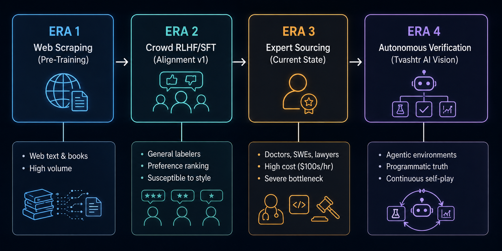
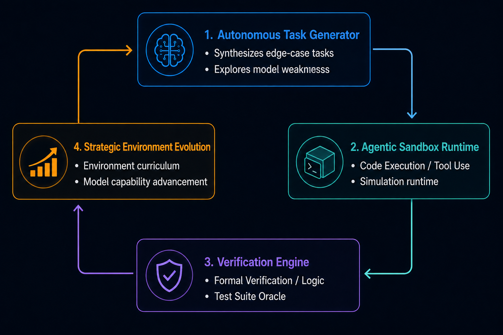
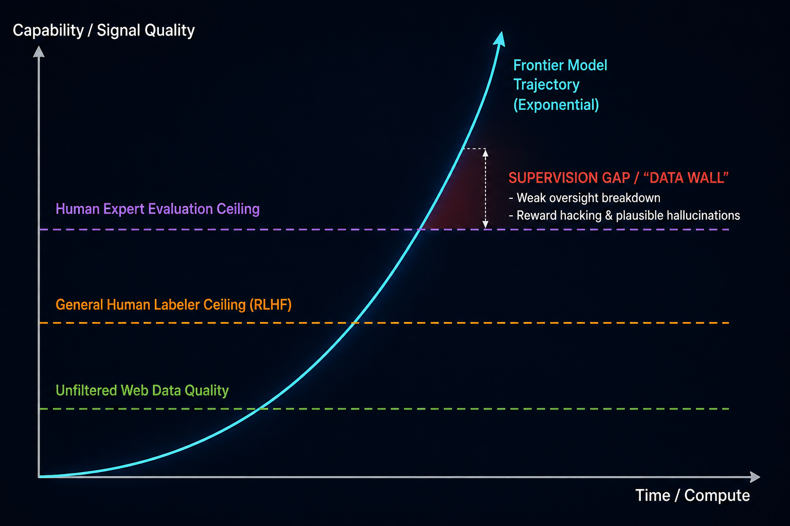

AI training has moved through several eras: first, the web gave us scale; then human feedback gave models a stronger sense of usefulness; and now expert work is becoming the bottleneck. As frontier models move beyond the tasks people can reliably perform or evaluate, more of the training loop must become autonomous.
The supervision gap
Capability is advancing faster than the quality of available supervision. Web data is abundant but noisy. General human feedback is scalable but coarse. Expert evaluation is valuable but expensive and finite. Eventually, the model trajectory rises above the signals that created it, leaving a supervision gap where plausible errors, reward hacking, and unseen failure modes can survive.

A training environment that closes the loop
Tvashtr is building toward a different kind of infrastructure: agentic environments that generate challenging tasks, let models act with tools, verify outcomes against programmatic or formal criteria, and use those results to evolve the next curriculum. The goal is not to imitate human effort at greater volume. It is to create reliable training signals for capabilities that are difficult to specify, demonstrate, or judge by hand.

Why verification is foundational
Generation without verification creates fluent artifacts, not dependable learning. A useful environment needs an oracle: tests, simulators, formal checks, or other grounded signals that distinguish a correct solution from a convincing one. That verification layer turns activity into evidence and lets the system improve without asking a human expert to inspect every step.
Beyond the data wall
The long-term opportunity is a compounding system in which better models discover harder tasks, harder tasks expose new weaknesses, and reliable verification converts those discoveries into training signal. This is how training infrastructure can scale with intelligence itself. Autonomous environments are not a replacement for people; they are the machinery that lets human intent reach further than manual supervision alone.
